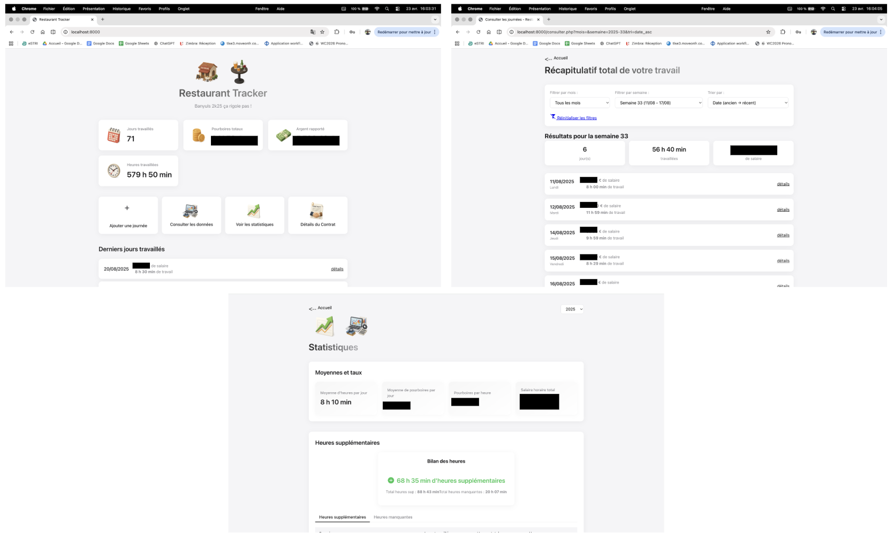
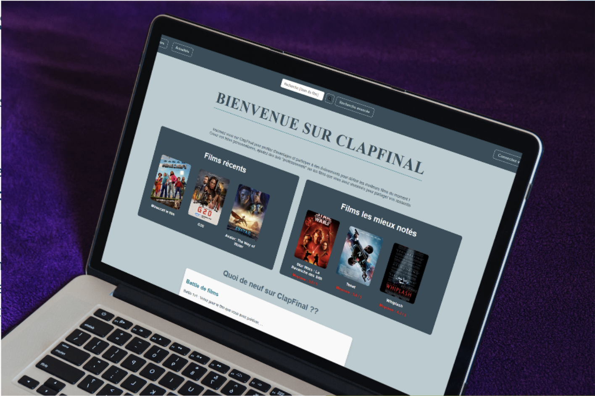

Site portfolio 2025
CV en ligne, portfolio et contact. Hébergé via GitHub Pages
Technos : HTML · CSS · JS
Projets personnels et universitaires — sélection représentative.
CV en ligne, portfolio et contact. Hébergé via GitHub Pages
Technos : HTML · CSS · JS
Application locale pour superviser heures et salaires pendant la saison au restaurant. CRUD local, authentification basique.

Technos : backend · base de données locale
Intégration responsive et optimisation. Exemple public : lamarendabanyuls.eatbu.com
Technos : HTML · CSS · intégration
Plateforme de type Letterboxd déployée sur une VM de l'infra de l'école.

Technos : Web · SQL · déploiement sur VM
Serveur en Python implémentant SMTP et POP3 avec sockets et threading pour gérer la concurrence.
Technos : Python · sockets · threading
Application Java répartie sur plusieurs VM de l'infra pour simuler une plateforme de partage de ressources entre utilisateurs.
Technos : Java · communication réseau (RMI) · VM